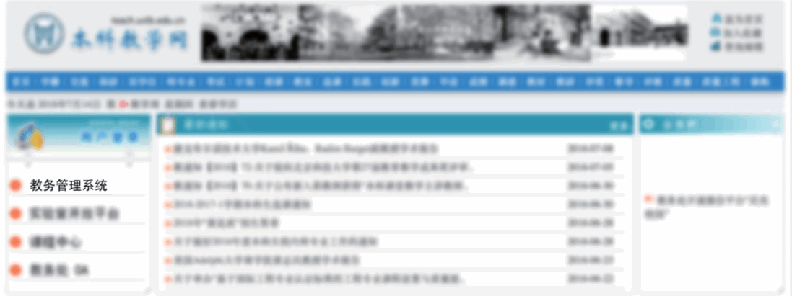
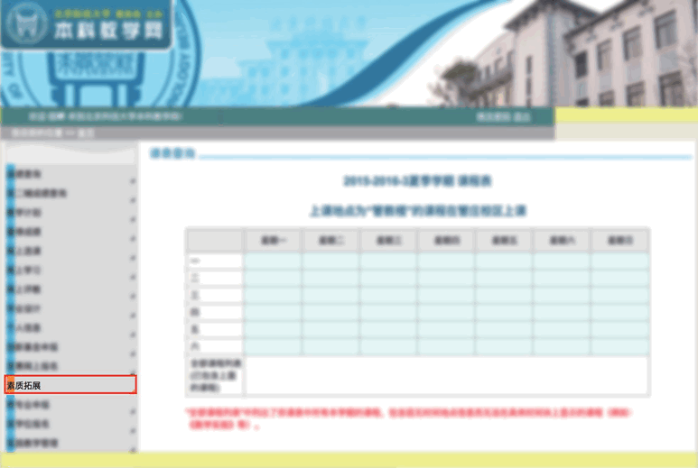
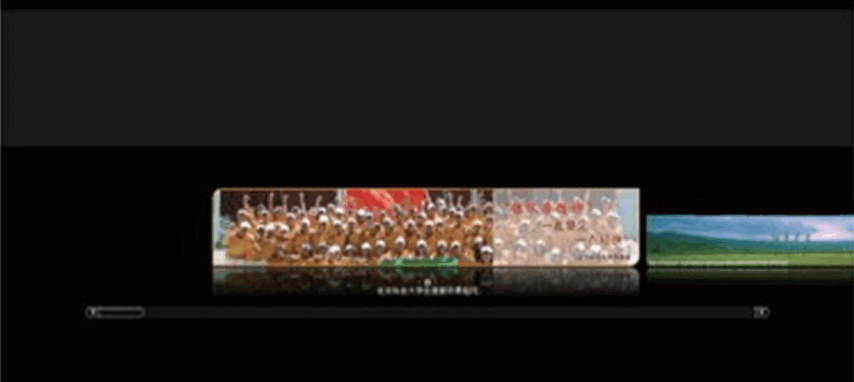
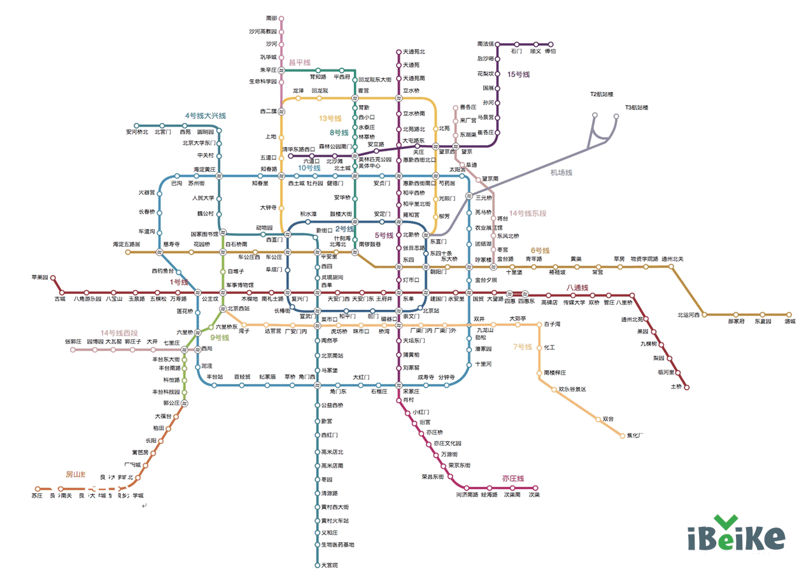
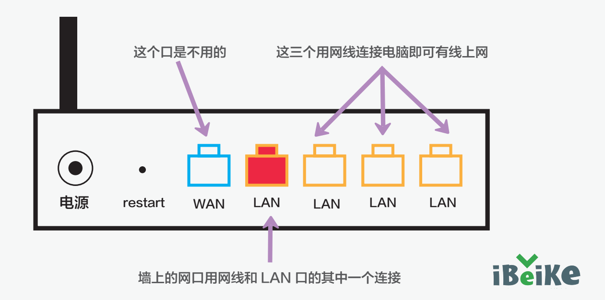
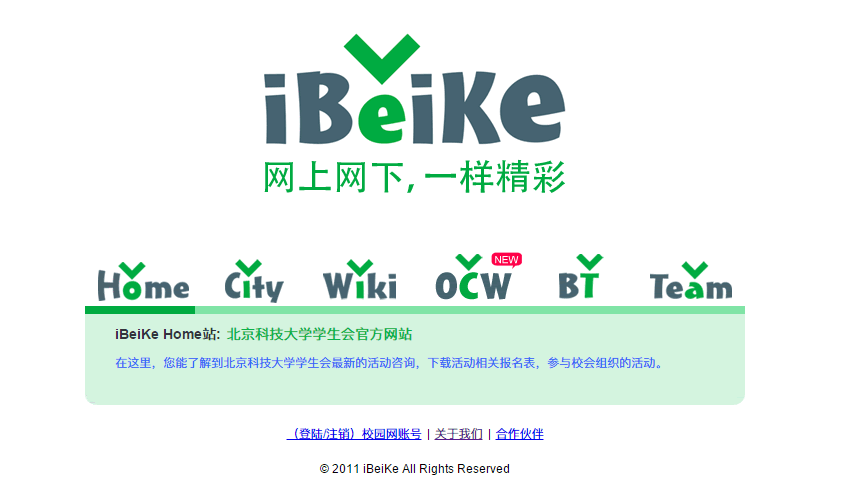

报道

军训

生活

学生工作

学习
我校2016级新生于8月26日、27日报到入学。
学校不会统一接待提前到校的新生，因此请各位同学尽量按时报到，如提前到校，需自行寻找住处（另26日即可在公寓办理入住）。
学校将在北京西站、北京南站、北京站安排迎新志愿者迎新，出站的时候就会有迎新志愿者举着牌子迎接。8月27日全天，在火车站的广场上，会有接站处，接站的都是你的学长学姐。白天在这三个火车站均有班车，人数够了就发车，你和陪同你的亲属都能乘班车到校。由于新生数量较多，学校在安排交通、住宿等方面压力较大，请家长尽量不要陪送学生，若遇到班车不足的情况，也可以自行乘公交或地铁到校。到达学校之后，各个校门都会有志愿者接待，指引你们到达现场。
首先说明，下火车后，顺着出站口可以到达北京站外的广场，地铁站应该是在西侧（坐地铁在除 C 口都可以，其中只有 B 口支持现金购票，A口和D 口只能用一卡通），公交车东西侧都有，相对来说东侧公交车较多一些，西侧只有三趟公交车。地铁站距离最近的是 B 口，然后是A口，最远的是D口。
方法 1.北京站→乘坐 2 号线，到崇文门→换乘5 号线，到惠新西街南口→换乘 10 号线（外环），到西土城→从东北口出，向前步行约 150 米，到达学知桥北公交站→乘坐 375,386,392,478,490, 运通103→成府路口南，到达北科西门。
或在乘坐 9 号线换乘地铁 10 号线（内环）时→到牡丹园，从东北口出→向南步行约 20 米到达牡丹园公交站→乘坐 508,16,425,635→志新桥北，到达北科东门。
注：对方法中第一种情况，去北京站时请到达学知桥南车站，乘坐的车次少一个490，多一个562（到学知桥东），上面存在的车次中，与补充站名不同的是386（到学知桥西），478（到学知桥北）。此方法换乘地铁较多，相对来说可能走的也比较多，但是相对时间有保证。票价 5+2 RMB。
方法 2.北京站→乘坐 2 号线，到西直门→从西北口出，步行至西直门北公交车站→乘坐 438,375， 到成府路口南，到达北科西门。
注：在从北京站回来的时候，乘坐438和375路的地点为632的下车处，千万别坐错。票价4+2RMB。
注：从北科到达北京站的时间平均为1小时10分钟，打车大约是45分钟，花费大约是60RMB 左右，非特殊情况下多于65RMB就不是特别正常了，从北京站到北科大要坐地铁时，建议过天桥到马路对面的B口乘车，虽然要过马路，但是速度最快，不管你有 没有市政交通一卡通。A口是第二选择（在北京站的西北方位，需要详细走到一个过街天桥再到马路对面），最不推荐的是D口（顺着人流向西走的口）。
首先说明，下火车后，应该顺着指示，可以看到去往南广场，北广场枢纽，北广场公交站，地铁以及出租车打车处的指示，请各位按照指示进行前往。我所介绍的路线中，没有去往南广场的路线，因为南广场步行距离较远，若不小心走到了南广场，可以乘坐616路到达北广场，而后继续按照下面的路线来前往北科大。
方法 1.北京西站→乘坐 694,387，到明光桥北→乘坐 693,632,490,375,392，至成府路口南到北科西门。
注：在去往学校时，乘坐这些车次均可，在明光桥南换乘即可。票价 4 RMB。
方法 2.北京西站→乘坐 694,387→到西直门南，乘坐 490→到成府路口南，到达北科西门。或者是在西直门南站下车以后，从地下通道向东，到地 面 上 向 南 步 行 约 50 米 至 车 公 庄 北 站，乘 坐693,632,375,392→至成府路口南，到达北科西门。
注：在去往北京西站时，只能在西直门南换乘，可乘 坐 693,490,392，票价 4 RMB。
方法 3.北京西站→乘坐 374，到万寿寺→乘坐944, 运通 109，到学院桥东（北科南门）或志新桥西（北科东门）。
注：此线路建议在高峰时段坐公交时乘坐，速度相对于上面的公交路线可能较快。票价 4 RMB。
方法 4.北京西站→乘坐 694,387，到北太平桥西，过天桥步行至同方向辅路→乘坐 425→志新桥北，到达北科东门。
注：换乘需要上一下天桥，到主路的车站换乘，去往火车站时，到北太平桥西还可以坐 16 路，同样需要到主路乘车。票价 5 RMB。
方法 5.北京西站→乘坐地铁 9 号线，到六里桥→乘坐地铁 10 号线（内环），到西土城，从东北口出→向前步行约 150 米，到达学知桥北公交站→乘坐 375,386,392,478,490, 运通 103→成府路口南，到达北科西门。
或在乘坐 9 号线换乘地铁 10 号线（内环）时→到牡丹园，从东北口出→向南步行约 20 米到达牡丹园公交站→乘坐 508,16,425,635→到志新桥北，到达北科东门。
注：对方法中第一种情况，去北京西站时请到达学知桥南车站，乘坐的车次少一个 490，多一个 562（到学知桥东），上面存在的车次中，与补充站名不同的是386（到学知桥西），478（到学知桥北）。票价 5+2 RMB。
方法 6.对方法 5 的补充，北京西站→乘坐地铁 9号线，到六里桥→乘坐地铁 10 号线（内环），到知春里→从西南口出，向西步行约 150 米，乘坐 944,386, 运通 109→到学院桥东（北科南门）或志新桥西（北科东门）。
方法 7.北京西站→乘坐地铁 9 号线，到国家图书馆→乘坐地铁 4 号线，到中关村→从西南口出，向西步行约 250 米，乘坐 740 内 , 特 9 内→到学院桥东或志新桥西，即北科南门或东门。
注：高峰时期不推荐，学校到中关村堵成狗，但是由于在国家图书馆是可以同台换乘的，相对减少搬行李的痛苦。去火车站时可乘坐运通 113，740 外，特 9 外，26 路（到 中 关 村 西），696 路（到 中 关 村 北），票 价4+2 RMB。
注：
1） 374,387 路在枢纽里面，枢纽的位置到西站还是很近的。全程时间综合考虑大约为 1 小时 10 分钟（综合所有线路的考虑，取平均时间）。
2）打车的费用应该在 40RMB 左右，正常路况下不超过 50RMB 比较正常，时间顺利的话大约在 35 分钟左右。
3） 关于打车，表示直接打车，一是不好打车，二是很容易打到黑车，这里提醒，一定要坐正规出租车，并且要求打表，价格要与我给出的相差不多。比较保险的办法是，坐公交车几站以后，再打车，这种问题基本上不会出现。另外现在北京西站有专门的打出租车的地方，各位如果在那里打车会比较靠谱一些
首先说明，下火车后，应该顺着指示，可以看到去往西直门公交站，地铁以及出租车打车处的指示，请各位按照指示进行前往。
方法: 西直门北→乘坐 438,375→成府路口南，到达北科西门。
注：还有一趟 632 路，如需要乘坐，请在找到上面提到路线的站牌后，到马路对面乘坐（向南，站名为西直门），此路线相对较快。也可以乘坐特15 路，不过绕路较多，并且票价高完全不推荐。到北 京 北 站 的 时 候，乘 坐 632 相 对 方 便。票 价 2RMB
注：完全不推荐地铁，因为坐地铁的速度还没有公交快。全程时间，顺利的话，大约为 20 分钟，打车不比公交快多少，打车的价格大约是 25RMB左右，遇堵车情况不超过 30RMB。
首先说明，下火车后，应该顺着指示，可以看到去往公交站，地铁以及打车处的指示，请各位按照指示进行前往。
方法 1.北京南站→乘坐地铁 4 号线，到海淀黄庄→乘坐地铁 10 号线（内环），到西土城，从东北口出→向前步行约150 米，到达学知桥北公交站→乘坐375,386,392,478,490, 运通 103→成府路口南，到达北科西门。
或在乘坐 9 号线换乘地铁 10 号线（内环）时→到牡丹园，从东北口出→向南步行约 20 米到达牡丹园公交站→乘坐 508,16,425,635→志新桥北，到达北科东门。
注：对方法中第一种情况，去北京南站时请到达学知桥南车站，乘坐的车次少一个 490，多一个 562（到学知桥东），上面存在的车次中，与补充站名不同的是386（到 学 知 桥 西），478（到 学 知 桥 北）。票 价 5+2RMB
方法 2.北京南站（地铁）→地铁 4 号线，到西直门→从 西 北 口 出，步 行 至 西 直 门 北 公 交 车 站，乘 坐438,375→成府路口南，到达北科西门。
注：还有一趟 632 路，如需要乘坐，请在找到上面提到路线的站牌后，到马路对面乘坐，此路线相对较快。也可以乘坐特 15 路，不过绕路较多，并且票价高完全不推荐。到北京北站的时候，乘坐 632 相对方便。票价 4+2 RMB。
方法 3.北京南站→乘坐 84 路，到西直门南→乘坐 490，到成府路口南，到达北科西门
或者是在西直门南站下车以后，从地下通道向东，到 地 面 上 向 南 步 行 约 50 米 至 车 公 庄 北 站，乘 坐693,632,375,392→成府路口南，到达北科西门
注：在去往北京南站时，只能在西直门南换乘，可乘坐 693,490,392，票价 4 RMB
注：打车价格约为 60RMB，多于 70RMB 可能就不太正常了，一般全程时间大约是 50 分钟。
方法：首都机场→机场大巴中关村线→学院桥东，到达北科南门。
时间：8 月 26 日 14:30开始
（管乐、民乐、声乐特长生的报到在八月初，具体时间另行通知）
地点：学校体育馆
大家要带齐全部证件：录取通知书、身份证、高考准考证、档案袋（有的省市由学校邮寄）、团组织或党组织关系、团员证、1寸（至少9张）和2寸（至少6张）照片等等，转户口的同学还要带上户口迁出证。需要说明的事，这些东西可能不会在当天用到，但今后用处很多，特别是照片（照片的底色也不要全部红色什么的，白色和蓝色也得有，另外最好备份一份证件照的电子版，以后可能也会用到）。
带上上述物品之后找到你所在学院新生报到的具体位置，就可以开始报到了。工作人员会给你一个档案袋，里面应该有一张校园平面图、一张报到流程图、手机卡、军训事宜通知、体检表、校园一卡通等。然后填写学籍卡，报名签到。( 宿舍钥匙在宿管处领取，今年可先办理住宿）。填的资料比较多，推荐自备黑色签字笔。
注：卡中预存有60元，是北京市政府发给大学生的每月60元的补助，以后的补助会在每月9号打到学校统一发放的银行卡上，每一年情况略有不同。另外新生刚入学的时候不能从银行卡转账到一卡通，大家可以到万秀园二层或者鸿博园旁边进行人工充值。
报到的时候家长不允许进场，只能在休息区休息，所以这个时候可以让家长先去买一些东西，以免待会儿过于忙乱。
学校早已分配好宿舍（可以在迎新网http://y.ustb.edu.cn查看），今年8月26日早上8点即可去公寓办理入住手续，可以先办理入住再行报到。
安顿好宿舍的事宜，就可以去领取军训服装了，领取军训服装的地方报到发给你的档案袋里会有说明，注意要当场试一下衣在服鞋子，不合适的可以当场更换。
8月28日下午进行英语分级考试，8月29日进行计算机分级考试，按照学校安排进行即可。
8月30日上午举行开学典礼，要着军训服装，典礼结束后会统一坐大巴前往军训基地进行军训。
北京科技大学会议中心（会议中心比较贵，学生优惠价大约300/天），是按照酒店的模式进行管理的,每套客房均配有卫生间、24小时热水、卫星电视、电话、宽带网及舒适的全套家具，住宿条件是非常好的
电话：
会议中心（电话：62315522）
培训楼（电话：62332512）
周边旅馆电话及费用：
汉庭快捷酒店（北四环学院桥西北角，电话：82326688，价格：标准间 360 元起）。
速8酒店（二里庄北口，电话 82388066，价格：标准间 248 元起）。
运鸿宾馆（北斗商厦西侧，电话：82381166，价格：普通双床房 158 元起 ）。
鑫昌泰宾馆（二里庄南口 , 电话：62328956，价格：标准间 158 元起） 。
志新宾馆（海淀区志新东路 14-4 号 ( 近志新路 )，电话 62310025， 价格 ：商务标准间 207 元起）
富侨曲园快捷酒店（海淀区志新东路 8 号，电话 62329233，价格 ：168 元起）。
（以上价格为宾馆标准间的前台参考价格）
如果校园周边的宾馆或者招待所都已住满，大家也不用担心，学校南门向南过一条街，花园北路上，或者过两条街到牡丹园地铁站，北土城西路上也有很多的宾馆。条件和学校周边的差不多。
1）根据自己的实际需要带合适的衣物。北京的冬天风很大，建议多带风衣等抗风的衣服。此外睡衣等建议自带。
2）带好相关药品。治疗感冒发烧、清热解毒、润喉清嗓以及应对各种皮外伤的药品，还有邦迪、风油精、云南白药等。
3）学习文具（如笔，修正带，科学计算器等）
4）其他：男生不要忘记剃须刀，女生要带卫生巾
喜欢乐器的同学要记得带（乐器在大学的作用很大哦，不仅可以闲暇时陶冶情操，同时也是提高个人魅力的利器之一，军训时可以大显身手哦）。
1）床上用品及衣物篇：
枕套、枕巾、床单、被套各两套，学校的虽然有点贵，不过很全面，也很方便，两套供换洗，如果习惯了家里的被子等也可从家里带过来，平时一定要注意常洗自己的床上用品。平时穿的鞋至少保证两双：棉拖、凉拖各一双。蚊帐在学校可以买到。
2） 寝室用品及杂物篇
洗面奶、浴巾、洗发水、沐浴露、花露水、牙刷、牙膏、漱口杯、护发素、脸盆、毛巾、洗衣用具（手套，洗衣粉，肥皂，衣领净，刷子等依据自己习惯准备）、洗洁精；
一个大点的盆或者桶之类的洗脚用、抹布（擦床、柜用）若干；
水杯、卫生纸、餐巾纸，大碗（泡面用）、筷子、勺子 ；
暖壶（供平时在宿舍打开水喝）；
普通衣架、衣夹之类；
挂钩（方便挂东西）；
梳子、镜子，洗浴套装（浴巾、浴球或者浴花等）；
小点的水果刀，扇子，雨伞，寝室需要柜子的锁若干（依据不同宿舍可能会有所不同）；可充电台灯（宿舍晚上熄灯），接线板等等。
3）学习用品及其他篇：
英语字典（也可以到学校在买，毕竟很重不好带），听力耳机（不仅入学英语分级考试要用到，今后的外语考试一直用），笔记本，剪刀，削水果刀、胶水 / 胶棒 /双面胶 / 单面胶，订书器（交作业和打印纸装订的时候经常用，务必要有），学校专用的作业纸（可以在学校物美超市或图书馆的书店买到）。防晒霜（这个提醒一下，军训的时候很有必要用哦，怀柔那边有的时候阳光很猛烈），帽子，眼药水，指甲刀，电话卡。
以上生活学习用品只是提供参考，新生可以选择性携带或购买。
4）银行卡和现金：
提醒大家一定要注意的是身上随身的钱不要过多，二三百即可，入学报道时会有一些地方需要现钱（如：购买床上用品等），再 留一些备用即可，切莫巨款在身；银行卡也注意保管好，以便不时之须。
注：每年在新生报到后假装导员、班长等收取各类费用的骗子不在少数。 请注意当你走进宿舍之后，任何人不会以任何理由向你收取现金，除了骗子。
入学后，会进行统一英语分级考试和计算机等级考试（详见你们的录取通知书和报到时发的资料袋，会有关于考试的一些说明），除个别专业外大部分同学都是必考的。
时间：8月28号
英语入学分级考试每年的情况会有所不同，但都是根据考试 的分数将学生分入不同等级的班进行学习。大学将根据新生考试成绩将学生分在高快班和普快班。 另外有些学院（如经管学院和文法学院）会将全体同学分到实验班。
两个班英语课所需学时和获得的学分相同，但高快班的学习进度超前普快班。
英语必修课一共需要三个期末成绩。另外，大一上期中考试不及格的高快同学会降到普快。高快大一上学期可以考四级，大一下学期可以考六级；普快班和实验班大一上学期期中和期末成绩同时达到学院要求的大一下学期可以考四级，高快和实验班只需要学两个学期的英语，普快班会学三个学期的英语，普快班没能在大一下学期考四级的同学在大二上考四级。 高快班和实验班是一周一节英语课，但普快班是一周两节英语课。
入学分级考试的考试时间为2小时，考试题型分为听力、词汇、语法、结构、完形填空和阅读，很多地方在向四级题型靠拢（如：听力变为四个选项，每段对话只读一遍且试卷上没有题目等），难度可能会比高考略高。各位考生在考试前要准备好身份证、无线耳机（详见 Tips）、电池、2B 铅笔、橡皮等考试必备物品。
编者认为英语分级考试非常重要，暑假可以做适当的准备，保持高考左右的状态。当然，未进入高等级班的同学也不要灰心，普通班中也有许多人的英语水平可圈可点。
时间：8月29日
考试时间为两小时，考试地点为逸夫楼8楼或者9楼，具体请到时候看学校的通知。
计算机考试题型为选择题、填空题和指令操作题。
其中指令操作题较为简单，和高中的题型基本相同，但选择题和填空题与高中有较大出入，不过考察的内容较为简单，希望同学们积极准备。
考察的主要范围为：
1）计算机基础知识：计算机概述，计算机发展简史，计算机的分类 ，计算机的特点，计算机的用途，计算机系统的组成，计算机的硬件组成，计算机软件，微机的硬件，构成中央处理器（CPU），进位计数制，不同进制数之间的转换，二进制的原码、反码和补码，数的定点表示和浮点表示 ，ASCII 码。
2） 操作系统：操作系统的功能，操作系统的分类操作，系统发展简史，Windows窗口和对话框 ，Windows XP中文件和文件夹的管理，文件和文件夹的使用，文件和文件夹的复制和移动，文件和文件夹的重命名、删除和属性设置，任务管理器。
3） Microsoft Word 2003：编辑文档，文档排版，制作表格，图文混排。
4）Microsoft Excel 2003：工作表的格式设置，公式和函数，图表，管理与分析数据。
5） Microsoft PowerPoint 2003：在演示文稿中插入信息，设计幻灯片外观，设置幻灯片放映，传递演示文稿。
6） 计算机网络基础：计算机网络概述，计算机网络的发展，计算机网络的定义和组成， 计算机网络的体系结构， 计算机网络协议，IP 地址和域名。
其中计算机与通信工程学院、自动化学院的孩子计算机等级 默认为免修，大一上学期直接进入 C 语言的学习。其他学院中此次考试成绩优异的学生亦可免修《大学计算机基础》这门课程。
考试时可打开电脑中的计算器计算进制间的转换。
进入大学，同学们首先要经历的就是军训这一项看似艰苦但实际上会让我们收获颇多的集体活动。军训是认识同学的好时机。
现就军训的注意事项略作介绍：
8月29号计算机基础考试结束之后，各学院辅导员会组织新生进行军训动员会议（也可能是只对班级指定的负责人开个小会议，介绍下军训的注意事项等）。
8月30号早上各学院学生统一集合，举行开学典礼。然后由学校大巴将全体新生运至怀柔雁栖湖军训基地，正式开始为期12天的新生军训。
1）被罩（最好硬一点，容易叠成豆腐块那种），床单（必须带，检查内务时必须要有），这些东西虽然也可以在军训场地租借，但是会很麻烦，建议还是自己带。
2）换洗内衣（多带几套），外衣（其他的衣服带一件 T 恤一条短裤就好，没什么穿自己的衣服的机会），袜子（厚一点，穿着舒服的），鞋垫（开学时操场有卖的，或者自己准备，多带几双） 。
3）脸盆，拖鞋，洗漱用品（毛巾，牙刷、牙膏、漱口杯，沐浴露、洗发水、洗面奶或者其他要用的东西），肥皂，洗衣粉（军训发的衣服有两套背心可以换着来，而且挺好干的，一天下来都是汗味不洗会很难受的），衣架（非常重要，不但可以挂衣服还可以用来撑被子），梳子（男生可以不带，女生长头发的要求盘在帽子里） 。
友情提示：其实洗澡用品和洗衣用品什么的可以和室友分工携带，毕竟用的次数也有限。
4）饭盒（吃饭要用），餐具（筷子即可，可以在军训场地购买，质量不是很好，训完扔掉即可），水瓶（大一点，有盖子的，结实不怕磕碰的，最好方便手提的） 。
5）防晒霜，卫生纸，卫生巾（可以垫在鞋子里减轻痛苦），面巾纸，湿巾，吸油纸啥的也可以带（去年编者早上早操之前来不及洗脸就拿吸油纸吸一下）。
6）插线板（一间屋子没几个电源插座，带上好给手机充电，白天充电会被没收），手电筒（可以考虑），带两把锁（一个锁柜子，一个锁自己的箱子，钥匙最好用明显的长绳子穿起来，不然容易丢！） 。
7）钱（要交军训费用 400 左右，这个动员会议上会说明的，自己再多 带 200 买零食就差不多了） 。
8）《学生手册》（指的是学生规范的那本），军事理论课本（虽然不用，但必须要带），笔，笔记本（写稿子用）。
可带一块小毛巾，裹在手腕上，擦凉用
清凉油，花露水（蚊子很强大，所以其实也没什么用）
胶带纸（粘头发利器），头绳，卡子（长发女生记得带），保湿唇膏等
指甲刀，眼药水，创口贴，清热解毒口服液，藿香正气水，维生素 c（军训期间很难吃到水果，可以用药物补充一下），治疗腹泻的药，治疗嗓子发炎的药（基地医务室里有，但是自己要带些，西瓜霜含片和金嗓子喉宝都带一些比较好，这个时候看病还不能报销，所以如果出现什么需要购买药物的情况是非常可怕的）
消遣时看的课外书 ( 如果书皮比较硬，把书放进去撑着，这样豆腐块就好弄得多了，学生手册也可以塞进去）
耳塞，晚上睡眠质量不好的孩子最好带上，毕竟18个人，室友难免打呼噜
太多外衣（没机会穿）
雨伞等物品（可以提前看天气预报，预计下雨的话可以带上）
洗涤灵（食堂有准备，每桌一瓶，每个人轮着洗碗，万一用完了可以去小卖部自己买）
娱乐用电子设备（除手机外，游戏机平板什么的最好不带，当然发生长时间降雨就另当别论了）
不要带太多没用的东西（最好能用背包放下所有东西。如果用拉杆箱得放到床底下，查内务的时候不让露头）
| 起止时间 | 内容 |
|---|---|
| 06:00 | 起床 |
| 06:10-06:40 | 早操 |
| 06:40-07:20 | 整理内务和洗漱 |
| 07:30-08:00 | 早饭 |
| 08:00-11:40 | 操课 |
| 12:00-12:30 | 午饭 |
| 12:30-14:20 | 午休 |
| 14:30-17:40 | 操课 |
| 18:00-18:30 | 晚饭 |
| 19:10-21:00 | 晚间活动 |
| 21:00-21:15 | 晚点名 |
| 21:30 | 就寝（熄灯） |
大致是走队列，军体拳，搏击操，匕首操，战术，基本军队训练等等，后期会分成各小队，如战术队专门练习战术；配套战术班很有趣，有行进间卧倒、提枪、出枪等，进入战术班是一次非常有意义而且难忘的经历；方队就会完成队列的一些训练；不同的学院会有不同的训练内容。在军训期间，会有几次晚上大型的讲座或活动，合计大概 7 次；最后会有大阅兵等等。军训过程中还会有歌咏比赛、᠁河比赛、演讲比赛、定向越野等活动。
友情提示：有一些活动看到其他连队参加了不要着急，迟早会轮到自己连队。
军训基地的宿舍一般是十八个人一间，也有少部分是十二人或十人一间。宿舍一般有空调，需要到一楼大厅值班室去换取遥控器，一般要交 50 块钱的押金 。宿舍有的柜子上会有锁，应该是之前在这里军训的人的，如果拿不下来那就意味着你们宿舍少了一个可以放东西的柜子，很悲伤。午休时间挺长的，如果睡眠时间要求不长的话，可以用此时间洗衣服洗头啥的。衣服洗完了白天是不能晾在寝室的，都要挂在厕所，然而晾衣绳只有一根，几乎所有楼的厕所没有门。
友情提示：白天由于不能用插排充电，所以建议携带充电宝，白天用充电宝给手机充电，晚上给充电宝充电。
军训基地有两个食堂，在第一次开饭之前，管后勤的老师会特别向大家询问少数民族或者宗教信仰的忌口问题，有需要的同学要及时提出。军训时吃饭前会喊口号唱红歌，吃饭时男生十人一桌，女生十一人一桌，站着吃饭（饭菜的内容以粉条居多），原则上吃饭时不准讲话。每顿饭后大家洗自己的饭盒，每桌留下一个人洗盘子和打扫桌子，这个由每桌的桌长来安排。每个班也会轮流打扫食堂卫生。
在军训基地只有一个小卖部可以买点零食，犒劳一下自己，大热天来一杯绿豆沙冰不能更爽，但是有点贵的，而且人也特别多，要排很长的队，可以在训练后先去买东西，然后再吃饭（不过不要提前离开队伍，要等到开饭后再出去，否则会挨训）。
在军训基地洗澡一般是隔两天左右一次，不过洗澡的环境实在不能更糟，地方小而且人也很多，最重要的是还有时间限制，一般是女生十五分钟，男生十分钟（其实也不会那么严）。
友情提示：第一组洗澡的人可能要面对前五分钟只出凉水的情况
军训基地是有督察的（很好分辨，是两个走在一起的带着白头盔的学生），督察负责在非训练时间监督学员的行为，除了在宿舍之外，学员着装要整齐（扣好所有扣子，不要摘下帽子，戴好袖标）；不要再走路时吃东西，打电话；集合时要静快齐。被督察抓到会被通报批评。
军训回来之后会有一门关于校规校纪的考试（大概会在 2 个月之后），考试内容出自《学生手册》和《学生保险手册》，在军训的闲暇时可以翻翻看（开卷考试，会有复习提纲，考试可以带书）。
每间宿舍会有一台饮水机，饮水机的质量不太好可能会漏水，要多注意一下，由同学组队去固定地点换取，一天只能换一桶，要合理分配饮水量，高层女生可以找男生帮忙抬水。另，军训基地在操课期间也会熬菊花茶。热水在一食堂附近有供应，是几个只流开水的水龙头，泡面洗头洗脚的热水可以从那里接，也可以用保温瓶储水。
大部分人会轮到站岗，领导来了敬个礼。有可能在半夜睡一半的时候起来站岗，站完以后继续睡，所以一定要记得定闹钟把自己叫起来。因为如果上一班站岗的人不认识你没法叫你的话，你可能就错过了岗，遇到这种情况记得去找导员。半夜站岗还是挺冷的，注意保温。
如果在军训期间不小心把帽子什么的搞丢了要赶紧上报，否则会按照故意不带处理，很尴尬，在军训期间如果发现鞋子严重不合适或者衣服不合身，也可以上报导员，到时候会找一天（仅此一天！）在小卖部集中按数量（没上报的是不会有的）出售相应尺寸的衣服。
查寝也是一件可怕的事情，查寝每天都会进行，通常情况下是一个导员带着相应连队的全部寝室长挨个宿舍巡回，每进一个宿舍就让非本宿舍的其他寝室长掀开认为不合格的被子（一般都会比较仁慈），但导员有时也会亲自掀被子，这就很可怕了，被掀被子的人一般都要接受导员的制裁（可能是扫走廊扫厕所啥的）。在一些重大的评比环节会让不同连队相互检查。
友情提示：如果你的被罩买来就比被子大或者被子本身不平，那就自求多福吧，和导员或者教官辩解也没用请提前做好心理准备；向被子里塞东西要有塞完了一定不会被掀的把握，否则被掀了就尴尬了。
关于下雨，一般军训期间是不会下雨的。但是也给诸位做一下可能下雨的心理准备，如果下雨的话基本上训练都能停下来，在寝室看书，等待教官查一圈寝之后就可以随意玩耍了，但是至于今年下不下雨就看你们的造化了。
对这个任务感兴趣的同学们，要求熟练掌握InDesign、PS 等平面设计软件，或者有一定的摄影基础（最好带着相机），再或者是擅长美术，书法，平面设计。每个连要用宣传板的形式展示自己连的风采 ，因此要出一些展板。当然这些也是在别人训练的时候进行的。不过几项任务每个连大概需要 10 人左右。建议能吃苦、创新、具有合作精神的同学们报名。
PS：军训基地会有一个办公楼，团部办公室是老师及领导办公的地方，学生工作会从每个连队经过选᠁，到团部再经过面试，被选上的同学会留在团部工作。竞争激烈，同学们可以踊跃报名。团部分为政宣和管训两个组，每个组大概要 10 人左右，是锻炼个人能力的好机会！
军训期间会有文艺表演，在训练的间隙，有兴趣的同学可以报名上台一展歌喉。并且在军训接近尾声的时候会有以连为单位而进行的文艺表演比赛。合唱中可以加入乐器演奏，相声小品等。由于 每个连大概有 400 人，所以要抽出其中 100 人左右参与文艺表演，而且这 100人的排练时间常常是从训练时间中抽出来的。所以提醒会乐器的同学如果方便的话可以在军训的时候带上自己的乐器。另外，对于会指挥或者有一定合唱经验的同学会优先考虑。
PS：军训期间经常会要求写一些类似自我介绍、军训感想之类的东西，关于自我介绍类的每个人都要，军训感想之类的按照连队中班去排，所以一班二班可能会排到的次数比其他班多。
大学的课堂采用走读形式，每门课的教室不同。大学课程内容的理论性、概念性都比较强，需要良好的逻辑思维能力。在课堂上老师会讲清思路， 点明重难点，速度快，信息量大，不深入。不同的课堂，老师的授课风格也不一样，所以也考验同学们的适应能力。习惯了高三的题海战术和接受式学习方式的各位同学要及时探索出一套适合自己的学习方法。
请同学们把平时的学习务必抓好，做到以下几方面：
1）课前预习 : 至少做到大致了解下堂课要学习哪些内容；
2）上课听讲 : 紧跟老师思路，大胆提出问题，做好笔记；
3）课后复习 : 过一遍课本和课件，有问题及时解决；
4）作业 : 做作业前先复习，一定别抄袭，DIY 或与同学讨论；
关注所有课程的第一节课，老师会在第一节课公布本课程的教学进度安排、学习方法、参考用书、公共邮箱（包含课件、试卷等学习资源）、答疑时间地点、考评形式等等，大部分老师不会按照书本逐字逐句讲课，而采用课件，建议将课件打印下来，在上课时直接在课件上圈画，课后复习也能有所侧重。如果是统一性打印课件，可以由班级学委负责。
如果老师没有提供课件,可以在iBeiKe的OCW站（http://ocw.ibeike.com）上下载相关的所有学习资料（历年试卷、课件等）。
另外，有些学院会安排给每个班一个小班主任，通常是由高年级的学长学姐担任，对班里的同学进行学习和生活上的各种指导和帮助。当然，每个班也会有专门的老师作为大班主任，但是老师通常很忙，见面的机会较少，大部分事情交给导员、小班主任和班委们。
大学的课程设置中，公共必修课最为重要，大一新生涉及的专业课较少，一般只开设学科基础课。但公共必修课如思修，近代史也算在加权成绩中，且学分比重不小，同学们不可忽视！
而且有入党打算的同学，思修、近代史、马原、毛概均有过 80 分的要求，大家务必重视起来。
建议大家做好以下事情:
1）做好课堂笔记，高数作业按时完成；
2）课本内例题与章节习题尽量做过一遍，将解题模式总结出来；
3）至少准备一个笔记本，做总结本和错题本使用。
在大一下开学之前会根据上学期期末成绩挑选两百人左右进入高数快班，大家一定要摆正心态。高数快班的同学在大一下学期必须选修工科数学分析选讲，这门公共选修课比较难，在高数快班中所讲内容要比普通班更深。向对数学十分感兴趣的的同学推荐。不过，即使因为成绩进入高数快班，也可以根据自己的实际情况，在退补选课阶段重新选择普通班。另外，根据学院不同，学的高数难度不同，有的叫工科数学分析（连 * 号内容也学（* 号内容主要在大一下学习，大一上与高等数学 A 所学内容完全相同），考试题目略难），有的学高等数学 A，个别学 B，文科类一般为高等数学 C。高数这门课程，只有通过练习才能总结出规律，至少要完成历年试卷，学院如果没有发习题集，还可以向学长学姐们借《高等数学习题集》。
大学英语课堂模式有很大转变，totally 是靠自觉自主的学习，一定要在大一就培养自己学英语的自觉性。
2016 级将分为英语快班和普班。部分专业为实验班（即自然班）。
快班每周一节课，可以在大一上学期即可考四级，大一下学期即可考六级。
普班每周两节课，是在大二上学期 12 月份可考英语四级。
普班（成绩要过75分）的同学均可以在大二上学期开学时参加考试，只要考试通过就可以在大二上免修。
从 2015 级起连快班也不再有外教课 ，外教将会根据自己的学术兴趣开设选修课。
学校的各类英语考试（如期中、期末）的部分题目（尤其是听力）会从往年的四级题抽取，以往甚至有引用 89年的四级题目的现象，因此如果想在英语方面获得高分，有空可以多做一些往年四级题。
英语学习课程分为好几个部分：
《大学体验英语综合教程》：该教程由同学们在中国大学 MOOC 网站上学习，是学校专有的 SPOC 教程，未经校方身份认证无法学习。
《大学体验英语视听说》：同为网上学习课程，注重英语 learning 和 speaking 的练习，但因系统不稳定，部分老师会让同学们线下完成。
《大学体验英语快速阅读教程》：不做硬性要求，同学们可作为自主阅读训练教程。
《TRP 资源共享平台： 主要用于提交老师布置的英语作文等作业，同时上面也有许多英语学习资源。该平台必须使用校园网才能登入，同学们可在教学楼内西北部分一至三层的英语自主学习中心机房内登入该平台。当然也可以在个人电脑上完成，但是需要先在电脑上安装一个TRP3.1版学生端。该软件可以进入（http://pt.ibeike.com）（需要先注册 ibeike 登录）然后搜索“TRP”就会找到 WritingRP 3.1，下载按要求安装便可。
老师也可能会要求你们做学堂在线也可能以其他形式代替之。具体学习计划由老师决定。
所以课本的内容基本都由同学们线上自学了，那么课上学什么呢？课上主要是通过老师组织的与课本内容相关的课堂活动，进行英语的综合运用，比如设计英文海报，表演英语情景剧等。以及对同学们自学过程中遇到问题进行解答和学习回顾。
部分学院将在大一上学期开设大学物理。由于没有高数基础，开始前两节课将介绍一些必要的数学微积分知识。物理学习中的微积分较简单，同学们不必太担心，当然同学们也可以在开学前进行适当自学。
很多的考试题目都能在下发的辅导书和往年试卷上找到原题，因此不必过分紧张。只要刷了历年试卷，不怕物理过不了。当然，这是建立在你认真听讲，作业 DIY的基础之上的。在期末考试前，有物理答疑，几乎所有老师都会去，建议不要只顾着做题，有问题尽量去答疑.均有过 80 分的要求，大家务必重视起来。
另外，每年十月份将进行大物竞赛，考试内容为大学物理上册所学，学校规定在校内竞赛得奖期末卷面成绩加10 分直到满分，在市内竞赛获奖直接免考大物的期末考试，卷面成绩为 100 分。均有过 80 分的要求，大家务必重视起来。
大一下会开始上选修课，选修课分为“公共选修课”（面向全校本科生）和“专业选修课”（面向本专业本科生）和“跨专业选修课”（面向 全校本科生）。我校实行网络选课系统（除体育课为现场选课外），每个同学都要登陆本科教学网（http://teach.ustb.edu.cn）新版教务系统在规定时间选课，会在学期末进行预选，开学时进行退补选。学校在预选阶段采取按年级比例抽签的方式（大四比例最高各年级比依次递减） 决定是否选上某门课，选课应根据自己的兴和时间安排，选课结果可能会有一些运气因素，大一下一节选修课也没有被抽中也是有可能的。每个学院要修的选修课学分不同，请各位同学注意查看教学计划，或询问导员或学长学姐们，建议大家在大一大二尽早修完。另外，我校还与学院路近 20 所高校（如北师，北航等）建立了“学院路共同体”（http://www.xueyuanlu.cn）每学期各个学校都会开设校际选修课按每学分 60 元收费，部分户外课程收费较贵，有兴趣的同学可以考虑选择。注意不同学校的学分互认可能比例不同。
1)大学四年英语类公共选修课必须修满2学分;
2)《形势与政策》选修课大学四年要选修一次;
跨专业选修课 是2015年秋季学期开始学校增设的选修课，即其他专业的专业选修课。跨专业选修课所选学分将算到公共选修课学分里。
1）逸夫楼、教学楼中没有人在上课的空教室。从 7:00~22:20，有空调。逸夫楼与各个学院每个教室门口都会有此教室的课表，进去的时候可以先确认一下。此外，在逸夫楼与教学楼一层的大厅里安装有电子显示屏，会实时更新整栋楼没有课的教室。到了期末考试周，学校通常还会开放逸夫楼 101、102 作为通宵自习室。
2）图书馆。有空调，座椅舒服，每天早上八点一直到晚上十点（仅周六下午六点以后会闭馆）但是每到期末都会爆满，尤其第一学期期末的时候由于考研，教室紧张，图书馆将提前一小时开馆，因此需要同学早起排队，但不推荐一人占多座。上学期最新增加了座位管理系统，同学们可以也去图书馆预定座位，或者进行网上预订。其中一层是必须选座的。但是到了考试周不管几层都一定要选座，不然其他选座的同学是有优先权的。具体怎么使用选座系统开学会有图书馆老师统一讲解。
3）各学院的院楼里也都各自设有自习室。对来自习的学生的学院也没有限制，几乎所有的地方覆盖有校园 wifi，个别楼栋（比如机电信息楼、经管楼）开放时间可至十一点半。
1）图书馆
北京科技大学图书馆馆藏文献具有历史悠久、特色显著、中外兼收的特点，收藏的部分文献具有很高的学术价值。要想快速找到自己想要的图书资源，你可以先在图书馆首页（http://lib.ustb.edu.cn）上搜索一下自己要借阅的书刊，记录下索书号和藏书位置，这样便可快速地找到相应的书刊。此外，图书馆还提供了强大的数字资源，包括电子图书、数据库资源和多媒体资源等，进入我校图书馆首页后，点击选择在“数字资源”下自己需要的选项。电子图书一栏提供了几大图书搜索网站的连接，因为我校图书馆同这几个图书资源站建立了合作关系，所以我们可以通过我校图书馆进入这几个网站免费使用。同学们可以在“数据库资源”中下载国内外的期刊、会议文献。如果是学位论文方面，推荐“万方数据库”；学术论文和其他论文，推荐中国知网和 SCI。
2）中国知网（http://www.cnki.net）
只要是校园网用户就可以免费阅读期刊文献，如果是外网就要收费了。
3）本科教学网（http://teach.ustb.edu.cn）
本科教学网上除了提供学校的各种相关信息之外，还提供了精品课程平台，其中有课件、报告的下载，虽然数量不多，但是质量较好，也是寻求课件的好地方。
4）iBeiKe 课件搜索系统（OCW）（http://kejian.ibeike.com）
iBeiKe 课件搜索系统是 iBeiKe 于 2009 年推出的服务，旨在构建北科大课件交流平台，并为广大同学们提供搜索和下载服务，以便于同学们自学和课后复习，其课件均是由热心同学收藏上传的，以供广大同学们下载，对于针对性的学习和复习有很大的作用。2015 年新版 OCW 发布了，拥有更精美的界面和更丰富的课件。
5）iBeiKe Wiki（http://wiki.ibeike.com）
贝壳百科，一部属于北科大自己的网络百科全书。在这里，你可以查找、创建、编辑词条、丰富词条，了解北科，谱写北科历史。
6）iBeiKe PT 站（http://pt.ibeike.com）
北科 PT 资源下载站。除了一些娱乐资源，PT 站上还有很多公开课的纪录片，有兴趣的同学可以去下载！
1) 答疑机会要抓牢
在大学里，每个学期由 16 个教学周和2 个考试周构成，一些科目（如高数、大物、线代、C++/C 语言）会和同学们制定一个每周固定的答疑时间，另外在考试前，还会有一定时间的集中答疑时间，专门回答同学们的问题。
2) 考试形式多样化
考试的形式分为随堂考和集中考，在每学期期末之前会在本科教学网贴出集中考试科目和时间安排。专业课一般是随堂考，一般由任课老师选择时间地点，在课程结束后两周内会进行考试，部分必修课也采用随堂考；期末结课的公共必修课是集中在考试周考试。
3) 总评成绩算加权
期末考试不是最终的总评成绩，平时成绩也会占总评的 10% ～ 50%，关于平时成绩的算法老师会在第一节课说明，平时成绩一般包括考勤、期中考试和作业三个部分。学校实行期中考试制度，原则上凡是上 16周的课程都必须有期中考试，其目的是提醒大家好好学习，因此难度普遍高于期末考试，不及格的人数会比较多。只要大家平时上课的时候好好听讲，期中取得好成绩还是很容易的。
就算期中考的不理想，也要摆正心态，接下来好好学习，大部分人是可以顺利通过课程考核获得学分的。 期中考试一般在期末总评中占有 0 ～ 20%，如果想在期末总评中获得高分，大家平时也不可以懈怠啊！
4) 学习不勤徒悲伤
在任何一学期内取得的学分不足 14 分，将会受到一次学业警示，如果连续两次或累计三次受到“学业警示”将被劝退学。
大家要注意大学的课程安排。对有些学院来说，有些课程会在开学的几周内就结课，也就意味着开学没多久就要期末考试，大家必须在平时抓紧时间好好学习。对另外一些学院来说，部分课程会在 9-16 周再开设，有些同学在1-8 周因为课程轻松而松懈，到了 9 周之后反而不适应忙碌的状态。希望同学们能有所警觉，及时调整。
在北科，奖学金的评定中大部分是由加权平均分来决定的，加权成绩的具体算法是：（各学科学分 * 各学科得分）/ 学分总和（除了出国可以算重修的成绩，其余情况在计算加权分时只算第一次取得的成绩，无论高分低分挂科与否，因此学分越高的课程应取得尽可能高的成绩）。然后将个人每学年的成绩按从高到低的顺序排列，依次定下不同等级的奖学金。总体来说，接近专业 50% 的都会获得奖学金。奖学金的金额从500 到 8000不等。
大一学年共有两次评定，大一上学期根据成绩发放新生奖学金，一般排名系 35% 左右的人都可以得到，奖金由250 到 2500 不等，所以要重视每一科成绩来提高加权。二等奖学金及之上通常需要进行奖学金答辩。大一下学期将根据大一整个学年的成绩评定国家奖学金，人民奖学金等。到了大二之后就是每学年一次了。由于每个学院人数不同，得奖人数也会不同。
第一学期各专业都要学公共基础课，如果在期末总评出现挂科，那你就要补考了。补考时间一般设在开学报到之前一周到开学 之 后的一周，也就是说挂科了的同学就不得不提早到校，甚至缺席一些课程。
补考即便通过了，也是会在成绩表上留下记录，而且挂科补考最高只能得到60分。如果补考未通过，不仅拿不到课程的学分，而且下学期或下学年还要随下一级一同上课即重修，每门课程只有一次重修的机会，此外补考和重修成绩都不会算入加权成绩。重修的课程一般没有平时成绩，并且很有可能跟你的其他课程有时间冲突，使这个科目更加困难。补考不需要交钱。
所以说，挂科百害而无一利，大家一定要端正平时的学习态度，千万不要挂科。挂科会让你失去很多的机会，包括转专业、奖学金、保研等，并且，如果挂科，该门课程的学分就被算作零分，一学期未修满14学分就会予以学业警示，而连续两次或累计三次受到学业警示就会予以退学。
大学生活，自然不只是课堂学习，还要有一定的课余活动和学习实践，北科的课外学习将以下四项列入了必修课，四项中任意一项没达标是不能毕业的。
北京科技大学志愿者服务课程网：http://zyz.ustb.edu.cn/zyz/index.do
从本科教学网中旧版教务管理系统可以进入：
1) 进入教务管理系统：
2) 在左侧栏目中找到素质拓展一栏：
3) 进入后选择左边的网页
北科大将志愿服务活动作为必修实践环节纳入本科教学计划 , 由各级团组织承担组织管理工作 , 通过组织学生在入学后六个学期内累计完成 36 工时的志愿服务 , 实现志愿服务的“精品化、常态化、专业化”，引导学生完成对志愿服务的体验、认同以至热爱，形成志愿服务工作的长效机制。
2008 年起，学校将志愿者服务列为科大学子的必修课之一，虽然没有学分且不参与加权计算，但学校颁布了硬性指标： 大学四年工时不满者不予毕业。
为了衡量同学们的志愿者工作，学校引入工时计算，即将你志愿者服务时间乘以一个比率累加，比率按志愿服务的种类而定。
我们学校要求每个同学在大学四年期间要完成36个工时。要想攒够工时，关键要抓住大一黄金时间，大一课余时间相对丰富，而且面向大一同学的志愿活动较多，所以建议大家大一多做一些志愿工作。也推荐同学们在大二或大三开学初参加迎新志愿服务，不仅可以提前见到新鲜的学弟学妹，更能获得大量工时。
为了响应国家创新性的要求，我们学校引入了创新学分，要求每个人要在四年期间修满 2 个创新学分。创新学分和公选课学分可以相互转换。主要有以下途径可以加创新学分：
崇尚实践是我校的优良传统，也是新时期北科大青年的精神追求。大学生社会实践是我校的一门国家精品课程，规定全校本科生大一年级必修，理论教学 10 学时，暑期外出实践不少于两周，计 3 学分，分数记入成绩单。实践形式可以为团队实践（6~12 人）或个人实践，主要内容包括社会调查、学习参观、社会服务、生产劳动、三下乡、四进社区等。北科大社会实践工作享誉全国，曾获得党和国家领导人多次表扬，被中央《求是》杂志称为社会实践的北科大模式。欲知详情，也可咨询社会实践形象代言人北科大实践小博士。
在每年的 6 月初，学校会下发关于转专业的相关通知，导员会及时地通知到每个人。如果希望转专业的同学可以根据通知报名，在小学期时会有面试或考核。除非你是学校招生时有特别约定（外语保送生、提前批录取的学生）的学生，只要所有必修课成绩及格， 在大一下学期和大二下学期均可提出转专业申请，可接收专业和人数由学院划定。
大一下学期基本上每个专业都可以转，大二下学期可转的专业相对于大一下学期就会少很多，并且，必修课相差太多有可能会降级。
如果申请转到某专业的人数超过了接收的人数，需要进行面试。最终排名先按照加权排名，再按照面试成绩排名，所以，即使不喜欢现在的专业，好好学习也是很重要的。
1）如果有转专业的计划，建议在转专业之前争取多去听听所希望转的专业的相关课程，进一步明确自己的兴趣和方向。
2）其实很多人都觉得自己专业不好，等到转成自己羡慕的专业时，会发现并不是想象中那么美好的。
3）希望大家不管身在什么专业，都要喜欢并热爱自己的专业。
4）在大学中，主要靠自己的努力，专业不好不等于自己的发展不好，反之亦然。
还有一点需要注意的是，转专业时你这一年获得的奖学金可能将会降一个级别或者取消（比如你是一等奖学金，但是如果选择转专业的话，你能拿到的就只是二等奖学金了），视情况而定（但若真能转到自己真正热爱的专业，这也将不再构成问题）。
双二辅的报名时间是大一下学期初，所以感兴趣的同学届时要注意本科教学网的相关通知。如果不能转到相关专业，双二辅也是很不错的选择。
我国学位分工学，理学，哲学，文学学位等等。每一个专业都对应着一种学位。如果你选修的第二个专业对应的学位与你的原先专业的对应学位不同，那你就可以获得两个学位证，这就是双学位。
若两个专业对应于同一个学位，你只能获得一个学位证，这就是第二专业。相应的第二个专业要完成一定的学分要求，如果你没能达到这个要求，但仍取得了大于等于 40 的学分，那这第二个专业就成为了你的辅修专业。
具体来讲，第二专业和双学位的课程在第三至第七共五个学期内完成，分两种形式随堂和集中上课。随堂就是跟着本专业的同学们一块上，集中则是将第二专业或双学位的同学们集中起来上课。再者， 在大四下学期，同学们要完成本专业和第二专业的两篇毕业设计 / 论文和答辩，一定要有心理准备。
保研的方式多样，其中最主要的就是学术保研，咱们学校保研率还是很高的，一般是系前 16% 左右有资格保研，其中又分为保外校和保本校，人数也有不同。其次是科技保研，针对那些成绩稍微靠后却在竞赛或科研上有重大成果的人。除此之外就是工作保研，这是为了奖励那些学生工作突出的人，工作保研需要在校工作一年或两年然后读研究生。另外还有支教团保研等方式。
如果没能达到保研的条件，又希望在国内继续深造读取硕士学位的话，就需要考研了。考研是一个相对比较辛苦的过程，需要大家有坚定的信心和不屈不挠的毅力。由于考研距离大家还相对较为遥远，因此这里编者就不详细进行介绍了。
留学很能开拓眼界，虽然学费昂贵但是教学水平更高，教学设施更先进，收获也会更多，建议家庭条件不错的同学可以选择留学。大一，大二的时候好好学习基础课和专业课，成绩好永远是第一位的。
国外一般是看本科的 GPA，北科大的 GPA 会将选修课和必修课全算进去，分数较低的选修课也不可以删去（所以出国党真是选修课体育课科科不能落下），但是不及格的课是不会算进 GPA 成绩的。算法如下表：
| 90-100 | 85-89 | 80-84 | 75-79 | 70-74 | 65-69 | 60-64 |
|---|---|---|---|---|---|---|
| 4.0 | 3.7 | 3.4 | 3.0 | 2.4 | 2.0 | 1.0 |
专业 GPA 为后两年 GPA，这个 GPA 要到学校注册中心去开（办公楼 1 楼），头一套（含中英）50 到 60 元，后面的是 20 元一套（含中英文各一份）。系里的排名证明要到学院去开。注册中心可以开一份 GPA 的换算证明，可以让学校把综合 GPA 和大三大四 2 年的 GPA 分别算出来（一般去开的时候，还没有大四成绩，这样，所谓的“专业成绩”就是按照你大三一年所有课的成绩来算的）。
现阶段，对自己成绩不满意的同学，每门课还有一次刷分（即重修，一般单纯刷分的同学老师只要求参加最后一次考试）的机会，这个刷分只为出国，不会改变加权分，笔者建议，能好好学一次拿到高分最好，毕竟期末比别人多复习几门是很累的。
大一、大二、大三的时候都可以开始准备GRE 、TOEFL 、雅思等考试，大二开始比较充裕，最晚也要大三上学期开始准备（至于具体怎么安排时间，要看你自己的专业课安排），下 功夫背单词。一般是先考GRE后考TOEFL。学管理的同学有的大学会要求考GMAT而不是GRE。这三个考试都在北京有考点。
除了标准化成绩和 GPA，大学四年做的项目、实验，发表的论文，还有个人经历，教授、公司推荐信也十分重要。出国考差的更多的是综合能力和综合素质，不仅需要你在专业上表现很突出，其它方面也不能落下，只完成好课程的内容是远远不够的。
出国肯定会贵一些，即使有的学校会提供奖学金（研究生项目提供奖学金的很少，而且有时候申请奖学金会影响录取率）。所以需要跟家庭商量好，家长的充分支持是很必要的。
出国需要很大的毅力，因为战线拉的比较长， 不像考研只用准备不到一年。所以需要你一直坚持。
更多留学咨询可参考 iBeiKe 留学版：
1）五道口——五道口地铁站的五道口购物中心，是一个大商场，餐厅多，还有华联超市，来了北科一定会经常光顾，各种聚餐经常会选择这里。但是周五周末人会超级多（被称为宇宙中心）！
2）西单——北门 690 直达西单商场。也可以乘坐地铁。西单购物中心、华威大厦、西单明珠、新一代、西单商场都是淘货的好地方。此外，汉光、君太以及大悦城商品齐全。
3）三里屯——汇集了好多国外的名牌，这里有全世界最大的 adidas 店，最大的苹果体验店。
4）王府井——东方新天地里面的商品都是名牌，步行街上有美邦，森马等店。
5）新中关、欧美汇购物中心——地铁十号线海淀黄庄站 A 口出，或者在北门坐 508 也可以直达。品牌众多。比较推荐的两个购物商场。
6） iBeiKe 校内交易版块
1） 洗衣机：大部分宿舍里面都有公用自动刷卡洗衣机（在每层楼的东 / 西侧开水房中），8 斋和 9 斋则是在一楼设有多台自动刷卡洗衣机，每次刷卡（校园卡）可用50 分钟 /3 元。卫生状况一般，建议使用消毒液。
2） 干洗店：8 斋旁边的居民楼里、学校大物美一层或操场北侧小物美东侧的居民楼里。
3） app：e 袋洗等。
大物美一层。
大学里需要定做班服、队服、宿舍服、各种 DIY 个性服饰的可以找学校的专业团队“clothes+”团队订制，详情登录www.kuluosi.com。
4、5 斋宿舍群的东侧，靠近东门公ᄀ，在北科体育馆对面。一层并设有四台校园卡圈存机，可以进行校园卡转账、网费缴纳和电费充值等业务；二层有校园卡现金充值的人工窗口。
营业时间及楼层：
早餐 ( 时间：6:45-9:00)，一、二层。
午餐 ( 时间：10:30-13:00)，一、二、三、四层。
晚餐 ( 时间：16:30-19:00)，一、二、三、四层。
夜宵 ( 时间：19:00-20:00)，一、四层。（四层 业结束时间为 21 点左右）
一层：中餐食堂，菜色范围广泛；粉面，炒面（饭），小炒，炸鸡套餐，饮品。中、晚餐时有独家主食面点。夜宵特色：麻辣烫，汤面，馄饨，煎包（荐！）
二层：平价楼层，蛋炒饭（荐！）
三层：陕西美食、兰州美食等；小炒一绝，双拼仅需 8 元（荐！）
四层：对外开放的万秀园餐厅，菜单点餐，现金消费，价格跟一般校外饭馆差不多，但饭菜可口，平价量足，是解馋和宴请的好去处。（万秀园餐厅的钢铁摇篮是本校特色招牌菜，身为贝壳一定要尝一尝）
鸿博园坐落在校园的西南部，位于冶金生态楼的北侧，2 斋西侧。鸿博园同样也有自助圈存机。
营业时间及楼层：
早餐 ( 时间：6:45-9:00)，一、二层。
午餐 ( 时间：10:30-13:00)，一、二、三、四层。（四层中午为教职工专属）
晚餐 ( 时间：16:30-19:00)，一、二、三、四层。
夜宵 ( 时间：19:00-20:00)，一、四层。（四层营业结束时间为 21 点左右）
一层：早起上课吃早餐的好去处，各地风味，麻辣香锅，石锅拌饭（荐！），水煮玉米（荐！），京酱肉丝（荐！）
二层：中炒、套餐、面食等，卤肉饭（荐！）
三层：清真食堂，盖饭，拌面，卤面等，大盘鸡拌面（荐！）
四层：教师食堂。
注：四层只有晚餐和夜宵面对学生开放，菜品和其他三层相似。 冬天的时候有涮锅。点菜的话可以刷校园卡或者付现金。校内的老师常在四层吃饭。
小物美小吃街：早上有早餐餐点类，任意时段都有煎饼，烤冷面等小吃，自习回寝路过一下，犒劳自己～那边还有沙县小吃。
16 斋小吃长廊：8 斋和万秀之间的 16 斋，有一条供人穿行的长廊，开着许多小吃店，麻辣烫，紫菜包饭，重庆抄手，煎饼等，8、9 斋同学回寝时，内心总会受到波动～
友谊餐厅：万秀园南面，类似万秀四层，是符合较高需求的聚餐场地。
北京科技大学会议中心：万秀园南面的高楼（类似酒店）。
东门（向北）：走有伊喜饺子，小街卤煮，小渝府，小码头火锅，山晋云中刀削面，雅佳川菜烤鱼等。
北门（向东）：小三峡，沙县小吃，9号火锅，驴肉火烧，成都小吃，江西瓦罐汤，西域美食，山西面馆等。
南门（穿过北医）：比格，吉野家等。
西门（向北）：麦当劳，肯德基等。
另外：往牡丹园方向走也有很多不错的餐馆，离学校也不算远，如欢乐牧场自助火锅，海底捞，陈阿婆等。
校内水果店：
许鲜：大物美一层，一家水果电商，网上下单，二天提货，方便新鲜，价格略贵（不支持直接购买）。
小物美水果店：沿街就有两家，小路进去还有一家保时保鲜，价格适中。
注：16 斋小吃长廊也有一家水果店，类似上者。
小物美东侧的居民区里，有一家北科大菜市场，菜、水果都有卖，质量可以，价格稍贵。
校外水果店：
百果园，嘉果一品：出东门往北走，在十字路口西边即可看见两家水果店隔街相对，价格便宜，办理员有小幅优惠。
物美大卖场：上文提到的十字路口继续往西，物大卖场里的水果蔬菜区。
学校有两个安静文艺的咖啡厅～
酷云咖啡：从图书馆东门进去左拐，在一层新书览室旁边，还提供面包，甜点，小蛋糕和各类西餐主食并且偶尔还举办沙龙活动。
时光北岸咖啡厅：位于 7 斋学生活动中心一层，置便利，味道不错。
还有一家饮品店：90°炭烧咖啡，位于大物美一层除售卖各类咖啡、奶茶外，兼卖冰淇淋，奶茶，布丁双皮奶，绿豆冰沙等，价格适中。
宿舍主要规格为6 人间（7 斋宿舍是 4 人间），每个人的床位是和写字台连在一起的，上面是床，下面是衣柜及写字台电脑桌。从硬件上来说，北科的宿舍条件非常好，各种安全设备设施一应俱全。楼管相当负责尽职，但是在开学的时候可能会因为人员较杂，有时难免有疏忽，所以各位同学也要自行注意，不要为了贪小便宜而上当受骗。大家要提高警惕，财物不要乱放，外出锁好门窗，钥匙不能给陌生人，也不要放在电箱或其他地方！
宿舍楼内每一层都有浴室（八斋浴室位于一层，九斋浴室位于 2,3 层）， 下午15:30 到 23:30提供热水，刷卡洗澡，按照流水时间 1 角 / 分钟。不过平时热水可能会迟到早退。
宿舍楼一般每隔一层就有一个开水器，只要到指定楼层去打即可，也是一分钟一角，也是刷校园卡。学校水站购买三十桶水免费送饮水机。订购地点在七斋活动中心西面偏门的第一间屋子。订购饮用水会有人送到宿舍并安装，但是宿舍的电功率是有限制的，不支持饮水机加热，会跳闸。想喝热水最好还是去开水房打（逸夫楼、教学楼、图书馆、各学院楼都有免费提供热水的地方） 。
宿舍晚上23：30会熄灯断电（除空调外的所有插口都会断电），关楼门（所以大家不要太晚回来，会麻烦楼管起床开门，楼管可能会把辅导员一起找下来），第二天早上6 点恢复供电。周五、周六、法定节假日、ჿ暑假期间晚间不断电。每个学期每个宿舍有 100 度免费电，用完后要自己去自助机上或到水电办购买（需先凭学生证到楼管处换取电卡）。自助机在一斋一层、二斋一层、五斋一层、九斋一层、鸿博、学生活动中心一层大厅，逸夫楼一层，图书馆一层，万秀园餐厅都有。水电办位于体育馆北侧。其中，自助机购买使用的是饭卡余额，水电办购买使用现金。
另外需要注意的一点：北科的宿舍楼为了安全起见，对宿舍进行了限电处理，大功率（单体功率超过 300W）的电器如电饭煲、电吹风等是不能使用的，一旦使用，电闸会自动跳起。如果跳闸的话，到门口打开电箱把开关推下再推上一次就会恢复供电。新式电表有限制，如果连续跳闸 3 次，电表将不能自动供电，需要到楼下找宿管解决。如果需要吹头发可以到该楼层特定的插座处用电（一般在楼梯口处，热水房或洗衣房）。
现在的宿舍楼都有门禁系统，一般时段都会是关闭的（节假日和高峰期除外），要刷校园卡才能进出。宿舍管理算蛮严的，都是按时早 6 点开门，23：30 关门。原则上不可以夜不归宿。 男女生不能相互串门。其中男生进女生宿舍是绝对不可能的，帮忙拿东西也不行。家长来看望也要登记的。有时候会断电断水，但是一般都会提前几天通知。 学校会根据实际情况已经将宿舍分好，开学即可见，大部分是一个专业在一起，不过如果专业不能分整寝室的话，可能与其他专业混住。 有些少数民族及预科班的也有分在同一寝室的情况。
空调：每间寝室的空调有一个遥控器，签署过协议之后，由宿舍长管理。大家使用空调时最好把窗户关上，节约用电。另外，空调夜间供电。
暖气：暖气位于寝室内窗台下，无需手动开启或关闭，不过有一个手动阀门，可以调节暖气大小。
| 对应学校大门 | 车站名称 | 停站公交车 |
|---|---|---|
| 西门 | 成府路口南 | 26，331，375，392，429，438，478，484，490，562，609，617，632，693，753，928，运通 103，特 15，夜 4，夜 14 等。 |
| 北门 | 北京科技大学北门 | 86，307，311，484，508，617，928（尽在去往地铁望京西站方向有站）等 |
| 南门 | 学院桥东 | 386，429，484（仅在去往北医三院方向有站），660，696，740，751，753，928（仅在去往成府路口南方向有站），944，983，特 9，运通 109，运通 113，夜 4 等。 |
| 东门 | 志新桥西 | 47（仅在去往小马厂方向有站），386，429，660，696，740，751，753，944，983，运通 109，运通 113，夜 4 等。 |
| 志新桥北 | 16，425，508，635，751（仅在去往大运村公交场站方向有站），运通 109 等。 |
入学后，学校将统一办理学生公交卡（公交 2.5 折，地铁 3 元起按路段收费，没有优惠）。由于学生卡发放程序繁琐，所以可能发放较晚，如果有需要可以自行办理市政公交一卡通。
出北门坐 307/617/484/630 两站或由东门向北步行经过两个路口可达二里庄，在那里可以办市政公交一卡通，你只需要缴纳 20 元押金和首次充值的金额就可以办理一张一卡通，在很多地铁站和邮局储蓄所也可办理一卡通。学生卡每年 9 月 30 日到期，因此秋季学期学生证注册后需要进行激活。
学生公交卡的充值只能在公交总公司（充值时注意要带学生证）。
五道口商圈（学校附近最大商业区，比较繁华）：出西门坐 562/375/331 或北门坐 86/690 或南门 656路均可。亦可步行前往。
中关村：最好不要购买电子产品，最好有熟人或者有懂行的人跟随。否则很容易被骗！一定要擦亮双眼！
鸟巢和水立方：感兴趣的同学可以去看看，鸟巢参观门票：50 元，水立方参观门票：30 元。国家体育馆站下车东行 400 米左右或南门过地下通道到学院桥东站乘坐运通 113/660/740 路到北辰桥西站下车北行 500米左右即可。
北京主要观光景点：（记得带学生证）
1） 颐和园：出西门 331 或北门 690 直达。
2） 圆明园：出西门 331 或北门 690 直达。
3） 天安门和故宫：周边还有人民大会堂，国家历史博物馆和毛主席纪念堂，离景山公园，北海公园，西单和王府井也很近。西门 490 路至阜成门北站，倒 90外至天安门西，节假日的时候推荐去西土城或六道口倒地铁，人比较少。
4） 天坛公园：世界上最大的祭天建筑 , 为明、清两代帝王祭祀皇天、祈五谷丰登之场所。北门乘 508 路至地铁新街口站，步行至新开胡同转 105 路在天桥站下车。
5） 香山：北京爬山热门地，秋天红叶是一景。西门 331 或南门 696 直达。
6）欢乐谷：北京最大的游乐场，生日当天凭身份证免门票。南门乘特 9 至工大桥换乘 31 路下行至厚俸桥南下车。
7） 世界公园：很多世界著名建筑微缩版的聚集地，想了解世界建筑特点的同学可以去看看。南门乘特 9 或740 路至看丹桥转 477 世界公园站下车。
8）玉渊潭公园：每年四月中旬会有樱花节，可以五一班级春游过去玩。南门 944 至航天桥南即可。对面就是中央电视塔和太平洋海底世界。
9） 南锣鼓巷：挺有意思的一条胡同，有很多美食和小店，离鼓楼、什刹海很近。从学校步行至二里庄南口，坐 635 路宝钞胡同下车或南门 386 路至西土城站换乘地铁 10 号线至北土城站换乘 8 号线于南锣鼓巷站下车。
10）三里屯：因北京夜生活最“繁华”的娱乐街之一三里屯酒吧街而出名，可以尽情地泡吧、购物。北门508 路至牡丹园站换 635 路至幸福三村站下车。
11）798 艺术区：挺文艺的一块地。原本是工厂，后从 2001 年开始北京周边和北京以外的艺术家集聚于此，利用原有厂房的风格，发展为画廊、艺术中心等。南门 696 路至大山桥东站下车南行 400 米。
12） 清 华 大 学：北 门 307/508 直 达，西 门429/331/562 直达。
13） 北京大学：出西门 562/429/331 可到北大东门。
14） 中国人民大学：西门 特 15 路 26 路 人大东门 。
15） 北京师范大学：西门 331 直达。
16） 北京外国语大学：西门 944/ 运通 109 路到为公桥站下车。
17） 对外经贸大学：南门 696/944/753 路，需要走一段路程。
18） 首都师范大学：东南门 944 到花园桥南。
尽管北京的公交和地铁十分发达，但是有时因为北京交通线路比较复杂，公交车不方便、等车、倒车也会很麻烦，有急事或者特殊情况时，也可以考虑打个车，尽管价格比较高，但是十分方便，而且服务质量很好，下面简单介绍一下北京出租车的收费情况。推荐 Uber或者滴滴打车等打车软件。
白天（早 5：00--晚 22：59）
起步价 13 元（三公里以内），超出（含）三公里至十五公里以内的公里数每公里按 2.3 元计费。超出（含）十五公里以外的公里数（每公里加收 50% 空驶费）按 3元计费。 还有等红灯的费用等等。
夜间（晚 23：00-早 4：59）
起步价 14 元（三公里以内）其它计费方式同上，但是每公里另加收 20% 的夜间费用 （不含起步价 14 元）。
PS: 北京出租车现在每次打车会加 3 元钱的燃油附加费 , 此外还有：
1）等候、低速行驶费
租用出租车时，根据乘客要求停车等候或由于道路条件限制致使车辆的时速低于十二公里时，每累计五分钟，收一公里租价的费用（不含空驶费）。
2）电话租车费
北京市有两个叫车服务电话，一个是北京出租车调度中心 68373399，另一个是北京银建实业股份有限公司 96103。只要打一个电话，再多交 3 元钱，就可以享受到外出打车的便捷。提示音过后，接线员接听电话，询问了具体打车地点和联系方式，随后挂线，开始查找。
3）过桥过路费由乘客承担。
另外，在这里要提醒大家，在北京乘车时，一定要到出租车站乘坐正规的出租车。上车时注意，车窗两侧应贴有收费标准、收费办法，和出租车汽车驾驶员服务监督卡。下车时携带好随身物品，向司机索要发票，需要时可记住所乘坐出租车的车牌号。
每到寒暑假，学校也会组织统一订火车票，多以班级为单位，而且可以订学生票的，但是只能订硬座的票（包括动车票）。现在开通了网上订票系统，所以大家也可以网络订票（www.12306.cn）。
周边购买火车票和机票的地点
1）北门外如居家宾馆有一个代售点，正规，手续费 5 元。
2）学校小物美西侧的金航线航空机票店可以订票，但是不能直接出票，需要拿着收据，等票送到那里去取。
3）超市发对面的麦当劳旁边有一个订票点，正规，手续费 5 元。
4）7 斋旁边有一个自动取票机器，学生票免费取，成人票手续费 5 元。
校内交通主要写给拿快递或者去教室嫌远，以及有事需要在校内或者学校附近走很多路的同学。
1）学校里有四处停放的许多ofo 小黄车，微信扫码，输入车牌号，获取密码即可使用。
2）学校九斋南面有卖新旧自行车的，价格还算合理，也可以根据个人爱好买个滑板漂移板代步。
3）学校的核心路段都有路障做汽车隔离，基本每条路都有减速带，校园内行走还是很安全的。
4）每节课下课后的几分钟，尤其是临近吃饭的那节课下课，教室走廊、楼梯、还有路上人都会特别多，所以要安排好去上课、占座、吃饭的时间。
注意：具体出行之前，应先用高德地图或是百度地图对乘车路线进行搜索，由于具体的公交路线每年都可能变，所以以上仅供参考，在北京出行，就应学会自己看公交站牌，自己查路线。对于不熟悉北京的同学来说，建议买一张纸质地图。
1） 五道口（13号线），北门有公交直达。
2） 西土城（10号线），西门、南门有公交直达。
3） 六道口（15号线），西门有公交直达。
以上公交均只需坐两站地，当堵车或者不想等公交时走过去是完全可以的。地铁非常准时、便捷，是编者出行的首选。
下页附北京地铁线路图，网上也能很方便的搜到，地铁里也都有，总之进了地铁就不会迷路啦！
鉴于大家入学后对信件、包裹的寄送流程不清楚，在此做个说明。同学们领取挂号信、平信、包裹流程。为了保证正常通信，及时安全准确的投递，要做到以下几点：
1） 书写正确的收信地址，即北京市海淀区学院 30号 北京科技大学 xxx 信箱 xxx 同学收，邮编 100083电话 1xxxxxxxxxx（ 一定要写上信箱号！ ）。
2） 学生领取挂号信，要以班级（信 箱）为单 位，设专人领取（生活委员）。如特殊情况须自行领取，请在领取的同时出示学生证和身份证。
3） 凡没有写清信箱或地址不详的信件、包裹，收发室将按照邮政法有关规定做退信处理。
原则上来说，大一上学期是不允许带电脑的。
学生在宿舍内可以上网，每个宿舍都有 1 到 2 个上网口，可以直接连接校园网。并不能擅自迁网线开通校外运营商网络。
校园网学生用户组收费标准：1.5G/ 元。
如何缴费：登陆http://pay.ustb.edu.cn/可用使用支付宝进行上网费用的充值，大概两分钟到账，很方便。
路由器攻略：
步骤 1：如图链接路由器
步骤 2：根据路由器的说明书一步一步设置
步骤 3：在路由器设置中找到 DHCP 选项，将其关闭，即可开始愉快的上网了（不这样做的话会互相串号）。
步骤 4：联网嗨起来，别忘了在city.ibeike.com逛逛哦！不用登录，免费的哦！
路由器选购指南：
1）建议自行在大型电商购买，价格比学校内很多小商贩要实惠不少，而且品种更齐全，售后更有保障。
2） 100 元左右的比较合适，太便宜的可能性能不够，再贵的性能就会冗余了。另外，因为每个寝室都有两个网口，而一个路由器只有 3 个口可以用来接电脑，所以建议和室友们合资购买两个路由器，这样日后全寝室的电脑都可以用有线上网，稳定性是无线不可比拟的。
3） 2.4GHz 和 5GHz 路由器怎么选：经常有同学问这个问题，现在路由器参数这么多，尤其是频率这个，完全搞不懂。实际上，在寝室使用的话，这两个是差不多的。不用太纠结。
具体解释起来的话，就要借助大学物理知识了，有兴趣的同学可以继续看，没兴趣的同学可以跳到下一节了：先给出大家两个公式解释一下“穿墙”的原理。
绝对折射率公式 v=c/n （20℃ 一个标准大气压 n=1.00027）
c=λf 波速 = 波长 × 频率
根据两个公式我们可以得出，空气中传播的两种信号，2.4GHz 比 5GHz 频率低，所以波长更长。波长长的信号衍射现象会更加明显，衍射更明显，就意味着这个信号可以绕过更多的障碍物。我们俗称的“穿墙”，实际并不是信号穿过墙了，因为任何信号，穿过墙之后能量都会极度衰减，而穿墙的真面目正是衍射现象，实际上信号是通过缝隙绕过去的并不是穿过去的。
因此我们可以得出结论，2.4GHz 的衍射更明显，也就是“穿墙”更在行。
但是 5GHz 的频率高，也就是信号传递的能量更大，所以在信号可以达到的地方，5GHz 的 WIFI 速度是会更快的。
希望新生同学们看了此篇路由器攻略不仅仅会装路由器，更能学到一些知识。
【此篇路由器攻略版权归北京科技大学 iBeiKe 团队和本文作者 iBeiKe 团队时任 CTO 曹宇宁所有，图片版权归 iBeiKe 团队原设计部部长施浩然所有，转载均需得到 iBeiKe 团队许可，否则团队有权利进行法律上的追究】
1） 麦颂：学院路店位于学院路 7 号弘彧大厦，从西门出来一直向北 1.5km 左右即到。牡丹园店在花园东路 11 号泰兴大厦 5 号楼 108 号，位于地铁牡丹园站附近。质量不错，歌曲更新很快，设备很好，音质也很好，推荐。
2） 北方鑫柜：科大学子御用 KTV。地理位置极近且价格适中，环境也不错。但是设备和歌曲更新比较慢，从东门出来左转走到十字路口向东 10 米处就是。
3） 赛乐堡：位于海淀区双清路 88 号，靠近清华东门，距离学校不远。从西门乘坐 438 路在清华东路西口下车即到，也可乘坐 331/375/656/562 路到五道口站下车。从南门志新桥西坐 429 也可。提供自助餐。
4） 十七英里：位于海淀区苏州街 3 号大恒科技大厦。从南门步行至学院桥东站（南门往西，至学校西南角左转，过马路左转）坐 740 外 / 运通 113/983 路到海淀桥下车再向南走约 200 米即可。价位适中，环境也不错。
5） 名柜 KTV：海淀区中关村科贸电子城 8 层。东门志新桥西乘坐 696 路公交，中关村北下车，再步行555 米到达。
6） 快乐地带 KTV：海淀区成府路 35 号东源大厦6 楼，城铁附近。东门志新桥西乘坐 429 路公交，五道口下车，步行 205 米到达。
学生证电影票可以打折。此外许多团购网站（美团，糯米团等）会经常有比学生票还便宜的团购。
1） 五道口电影院：离学校最近。坐车到五道口站随便走两步就看到了。票价比大电影院便宜。
2） 嘉华国际影城：位于圣熙 8 号购物中心，环境十分不错，服务周到，观影体验好，推荐。西门口坐 392 或 693 或 490 路车，到石板房站下车；或者从西门出一直往北走，经过三个路口，也就是过了农大就到了，规模很大，而且经常有团购票。
3） 海淀剧院: 海淀剧院的位置很好，紧挨中关村电子市场和家乐福旗舰店，最重要的，海淀剧院是海淀文委的单位，票价是有一定服务性的，常有学生价。南门乘坐 983 路，在中关村西站下车，步行 700 米至海淀剧院。
4） 美嘉欢乐影城（中关村店）：位于中关村 15 号津乐汇 3 楼，从西门乘坐 26 路，或从东门乘坐 特 9 外环运通 113/983 /740 外 /740 外 公益西桥，在中关村西站下车，中关村地铁站 D 口向西 100 米左右。
5） 金逸国际电影城（中关村店）：位于中关村 19号新中关购物中心 B1 层。可以乘坐地铁，至海淀黄庄站。
6） 花园路国安剧院：西门乘坐 484 路在塔院站下车，步行 500 米至国安剧院。
7） 辅仁电影院：西门乘坐 484 路在塔院站下车，步行 260 米至辅仁电影院。
8） 华星影院：西门乘坐运通 103，在明光村下车，步行 30 米至华星影院。
9） 星美国际影城：从南门出发步行至学院桥东站（南门往西，至学校西南角左转，过马路左转），乘坐运通 109，在远大路东口站下车，步行 130 米到达。
10） 首都电影院：西单大悦城顶楼，环境非常不错。乘坐 47 路，在缸瓦市站下车，步行 590 米至首都电影院。路程时间约 50 分钟。也可以乘坐地铁，至西单站。
北科大的体育场地还是比较紧张的。除了体育课上课时间（上午两节课和下午第一节课），篮球场是随时可以打的（操场西北角有灯光的小场一人 10 元随便打）。足球场开门时间不确定。网球场是 20 元 / 小时（可以趁早晨和中午体育课之前进去玩）。在大操场的东边，有一些健身器材，很适合晨练及晚上锻炼。
同时我校的体育馆是 2008 年的奥运场馆，环境相当不错，而且现在已经对学生开放了。羽毛球、乒乓球、篮球等场地都可出租，周一到周五白天价位是 10 元 / 小时，周一到周五晚上以及周末价位是 30 元 / 小时。游泳馆也对咱们同学们开放，时间是中午 12：00——13：30，下午 16：00——17：30，凭学生证，每场 10 元，周末和晚上价格翻三倍。（去体育馆记得带学生证）
同样属于体育馆的还有游泳馆，热爱游泳的同学可以在闲暇时间去，馆内环境不错，拥有两个游泳区：深水 2.4 米（需要办深水证，每人 10 元，记得带 1 存照片），浅水 1.2 米。办一张学生卡只要 210 元，30 次，也就是大约 7 元 / 次，一次可以游一个半小时。注意：游泳卡一次充值的有效期 5 个月，有效期内没有用完游泳卡将被冻结，充值后可激活重新使用。
PS：体育馆比较火爆，想去使用场地的同学最好提前预定一下。
每年 10 月，会举行全校范围的新生运动会。来年的 3 至 4 月份，各个学院会组织自己的运动会，地点都是在操场，时间会被错开。五六月份还会有最大规模的校运动会。
在学校旁边的天工大厦 A 座 3 层有一家健身房叫科大中冶健身，非常近，环境好，价钱对学生来说稍微有些贵（100 次卡和 1 年卡都是 3500），不是特别大但是器材基本够用，器材都是进口的而且很新因为 2015年才开。对环境要求高的同学可以选择。
大家原来可能最主要用短信和QQ联系，在北科最普遍最主要的是用微信，微信基本已经代替了短信。辅导员或者老师、班长会建微信群，通知一些重要信息；朋友圈也会有好友们的各种动态、活动宣传。还有各种有趣的公众号等着大家关注～别忘了先关注iBeiKe的哦！（ustb_ibeike）
告别了专注于学习的高中生活，大学生活迎来新的挑战。如果你是一个勇于展示自己的人，学生工作便可以作为你的选择。学生工作不但可以全面地培养你的各项能力，还可以让我们结识到更多出类拔萃的人，同时也为大学生活增添不少乐趣。所以在学有余力之时，把自己的能量投入到学生工作之中是不错的选择。
在处理好个人事务和成绩之余，也可以参与到年级、班级的学生工作中来，以锻炼自己的组织沟通等各方面的能力。
年级工作的职务：
部分学院有年级团总支、年级长、学习委员、文体委员。
班级工作的职务：
主要包括班委会和团支部：
班委会成员有班长、副班长、学习委员、生活委员、文体委员。
团支部成员有团支书、宣传委员、组织委员。
（不同学院会有所不同）
班级工作较为琐碎，每个人做班级干部都可能会有自己不同的处事方法，但是一定要注意的一点就是——沟通。大学的同学来自天南地北，所以作为班级干部的话一定要学会平衡人与人之间的关系，并且要在整体上能够把握住班级的发展方向。多多体谅同学，尽量从大家的角度思考，不要独断专行，也不要优柔寡断，这点要自己体会。
PS：班长对于班级的管理方法很大程度上会影响这个班级的活动和学习氛围，所起的作用远远大于高中初中，所以说想要当班长，一定要做好迎接挑战的准备
学生工作部（处）
1） 学子在线网站：http://student.ustb.edu.cn
2） 学生工作部（处）简介：学生工作通讯社作为北京科技大学校园媒体类的社团，本着创新媒体，精准传播的宗旨，在过去的一年里我们这支专业的学生新闻宣传队伍精准把握活动的一线报道，将我校学生工作通过微信平台、线下活动等形式进行宣传，促进学校与学生之间的沟通与交流，纪录贝壳脉动，引领校园文化，为我校学子带来及时，丰富的资讯大餐，并且引导我校同学正确的思想政治方向。
3） 请关注“贝壳学子”微信平台：ustbxts。
4） 学生工作通讯社简介：【贝壳学子】微信公众号由我校学生工作部指导，学生工作通讯社运营的平台。【贝壳学子】致力于新生教育和校园思想引领，与我校学业与发展指导中心等机构深入合作，促进学校与学生之间的沟通与交流，纪录贝壳脉动，引领校园文化，为我校学子带来及时、丰富的资讯大餐。
北京科技大学学生会门户网站：
简介： 北京科技大学学生会是中华全国学生联合会成员单位、北京市学生联合会主席团单位，是在北京科技大学党委领导下、北京科技大学团委指导下的广大同学实行自我管理、自我服务、自我教育、自我完善、自我发展的学生组织，是学生自我管理的最高机构，代表和维护广大同学的根本利益。北京科技大学学生会的宗旨是“全心全意为同学服务” 。部门： 我校学生会分为院学生会及校学生会。校学生会实行民主集中原则，各部门之间分工合作、协调发展。校学生会现有各级学生干部共 300 余人， 共设有 12 个下属部门及常务代表委员会（包括两个部门） 。
关于学生会的部门：
办公室是学生会的中枢机构与核心部门， 起到协助主席团统筹安排各部门的工作与加强部门间的沟通与联系，完善学生会自我建设与管理，树立学生会整体形象的作用。主要工作内容包括负责学生会各项规章制度的制定，协助主席团开展工作，各项文件的起草与精神的传达、通知的发布，负责学生会的财务管理、档案管理、物品资源管理工作，安排日常值班，对学生会的各项规章制度的执行有监督的权利。办公室是学生会日常工作得以顺利进行的基础，各项执行力的保证。
北京科技大学组织部隶属于北京科技大学学生会学生干部服务中心、 按照“ 一体化” 工作模式、 开展学生干部服务工作、 培养北科能人、 社会精英。 在干部选拔、培养、 考评、 调整四个方面开展招新换届、 干部学校、 技能培训、 高校论坛等活动、 让学生会真正成为培养创新型、 领导型、 综合型人才的摇篮。 同时从学生会内部干部着手、 再辐射到各学院学生干部、 注重本、 研学生会的联系。 通过校会走进院会等活动使学校整体的学生工作进行得更顺利、 完备、 促进校、院一体化进程。
外联部主要负责做好校内、 校际、 校外公关及后勤保障工作， 通过名家讲坛、校友讲坛、高校主席论坛、高校学生干部交流会等活动搭建校学生会内部、各学院之间、各大高校之间的交流平台，并做好各项活动保障。
编辑部主要负责文字编辑，活动记录，活动前后期线上线下宣传的任务，包括活动信息一体化，人人、微博、微信三大平台的推广与建设；通过多种宣传途径实现对学生会各项精品活动的全程宣传；为活动的举办提供更加专业化的策划、建议及服务；校园信息的推送、学生会理念的传达、活动的记录以及宣传品（新生手册、会刊等）的制作等。
媒体部主要负责通过多媒体进行各项活动前后的宣传及校内信息的传播，具体可分为两个方面：视频媒介、平面媒介。视频方面具体包括：通过专业的视频制作对学生会的各项精品活动进行宣传，以最丰富的形式呈现每一次活动。平面方面任务具体包括通过图文结合的方式，以最概括的文字、最简洁的图像将每一项活动信息及消息最大限度地呈现给大家。
网络部主要通过网络媒介，传递校会最新信息，实现无纸化宣传，是发布学生会最新活动动态的平台。
文体部的职能是引领校园文化，倡导及传播先进思想，通过活泼健康而又极具新意的形式来丰富和发展同学们的精神生活。 文体部一方面通过发掘校园生活中的美丽与亮点来启迪同学心灵，培养高品位的学习、生活情趣；另一方面又以一系列高质量活动来提高同学的艺术水准，从而提高生活质量和生活理念。文体部负责举办校园歌手大赛、校园主持人大赛、柿子文化节、新年晚会等活动，传承北科经典，引领校园文化。
权益部是校学生会为了进一步维护广大学生权益、培养学生维权意识而专门成立的新部门。在失物招领，学生维权等方面做出了突出的贡献。权益部通过整合iBeiKe、人人等平台的信息，为同学们的权益保驾护航。
北京科技大学学生会共建部作为学生会常代会下属的部门、 隶属于北京科技大学学生会学生权益服务中心、主要职责是与学校物业中心、 后勤集团、 饮食中心、 图书馆、 校医院等学校九大职能部门进行沟通和维权共建协助同学解决问题、 搭建同学与各个部门沟通的桥梁、 以共同建设北科校园为核心、 为引领同学自主维权创造条件。 同时负责学生代表大会期间的提案整理汇总、 并及时与各部门领导沟通协商、 共同制定解决方案。 此外、 通过开展 " 食堂值班经理 、 “ 后勤集团部处座谈会” 、“ 我的明星我的菜” 等一系列活动、丰富同学们的维权途径、最终达到使同学们学会自主维权的目标。
生活部工作的一方面是搭建校园就业服务平台。 通过就业创业知识讲座帮助学生更好就业， 并且尽可能的为同学提供兼职、 勤工俭学信息， 就业岗位等机会；
另一方面“贴近生活，添彩文化”，以同学们喜闻乐见的方式，开展各种关于生活的活动， 在广大同学中倡导积极、 健康的生活姿态， 让大家在生活中学会学习，对生活有所感悟。生活部优秀而有影响力的活动有“生活文化节”、“篮球嘉年华”等。生活部的工作还包括关注学校特殊群体，为他们提供生活上的帮助和便利，与少数民族学生专项座谈，留学生交流活动等拉近大家的距离，增进大家的友谊。
调研部是校园舆情服务中心的主要组成部分，通过多种形式的调研活动，了解校园舆情动态，发现学生所需，为其他服务中心开展工作提供依据，搭建一个学生与学校交流的平台。同时，调研部负责运行团学测评体系，为校内各类活动进行满意度测评，帮助活动更好地进行。“我爱我师——我心目中最优秀的老师”评选是调研部的品牌活动，意在了解学生心目中最喜爱的教师并感恩优秀教师的付出，引领校园尊师重教的良好风气。
学习部与北京科技大学教务处合作，完善学校教学评优工作，是联系老师与学生的纽带。主要以提高教师授课质量与学生听课效率为中心开展工作，收集制作逸夫楼及教学楼无课表、无考试表，策划组织“名师面对面” 、“我爱我师——我心目中最优秀的老师”评选、“校园辩论赛”、各类学习讲座等活动。并参与 iBeiKe 课件共享系统的共同建设。
校友联络服务中心是北京科技大学学生会在总结六十周年历史积淀， 广泛吸收各高校优秀经验的基础上，于 2014 年新成立的中心，目前下设校友联络部。本中心是一个充分利用各种渠道，与各届学生会校友保持密切联系的中心。主要职能是与学生会各届校友保持良好的联系，完善校友的通讯方式与信息资料；做好校友的接待与回访工作，搭建校友与母校沟通情感的桥梁；同时凝聚力量，动员社会各界关心和支持母校以及学生会的发展， 做好 “发掘者” 、 “践行者” 与 “联络员”的重要角色。
iBeiKe 研发部
北京科技大学学生会的网络技术支持，也是 iBeiKe 团队的部门之一。主要从事 iBeiKe 网站的整体及下属站点 Home、City、PT、Wiki、OCW、Team 的技术维护、服务器维护以及应用开发。同时，他们也会参与部分产品的设计中。
iBeiKe 设计部
iBeiKe 设计部负责 iBeiKe 网站的原型设计、美工创新等视觉感官体验的进步及完善工作。通过内部人员互相协作，将成员的创造性和想象力运用到网站以及校学生会的推广、宣传中去。设计部的日常工作包括海报设计、传单设计、网页设计、周边设计等，并且他们对网站的功能、需求都有相当的理解，也更趋向于从需求到设计到实的包揽。
iBeiKe 运营部
iBeiKe 运营部的主要工作是策划、组织、开展与iBeiKe 网站相关的各种线上线下活动，完善 iBeiKe 团队的个性化、人性化及服务化宗旨，制定工作计划和目标，统筹其他部门，确保各项工作的实施。运营部成员同时维护 iBeiKe 的官方站务博客 iBeiKe Team 站，微信公众号，iBeiKe 微博。
我想加入：
1） 根据近年来的经验，学校为了加强学风建设，会将学 生会的招新工作推迟到大一下进行，具体情况开学会有相关通知，若有招新的话，宣传单会铺天盖地地发到大家手中。
2） 我应该去校学生会还是院学生会呢？不管是在校学生会还是各学院的学生会，只要自己认真好好去做，都会得到很大的成长。各学院的学生会工作主要是负责院级的，工作较细致；校学生会的层次高一点，比较容易锻炼人际交往等等。当然不一定每一个人都适合学生会，可以先加入，后根据自身情况调整。
共青团北京科技大学委员会的官方网站：
简介：共青团北京科技大学委员会在上级团组织和学校党委的坚强领导下，以邓小平理论和“三个代表”重要思想为指导，按照科学发展观的要求，紧密围绕党政大局和人才培养，以“大学生素质拓展计划”为统揽，坚持以人为本、求真务实、开拓创新，着眼团学工作的系统规划和长效机制的建设，探索新形势下北科大共青团事业的新发展，依托一系列精品课程、精品活动和精品项目，着力推进素质教育和大学文化建设，为广大青年学生的成长成才提供优质的指导和服务，团结带领全校团员青年为学校建设高水平研究型大学、实现和谐民主创新的大学校园文化贡献力量。
部门构成：
共青团北京科技大学委员会下设 11 个部门：
1） 办公室：
负责校团委资料存档工作，校级团学组织干部综合测评的加分评定工作，校级团学组织学生活动的认证加分工作，校团委办公室整理工作，校团委办公用品采购工作，校团委对外交流工作。
2） 组织部：
负责全校共青团组织建设及团干部队伍建设，组织团校学习。负责校级学生组织建设及学生干部队伍建设，组织学生骨干培训。负责全校各级团组织、团干部的评优表彰工作，举办五四表彰大会。负责全校学生组织、学生干部的评优表彰工作，举办一二九表彰大会。负责团籍管理、团费收缴等相关办理、统计工作。
3） 宣传部：
负责全校团员青年思想教育和引领工作。负责校级团学骨干理论学习。举办“五四”、“一二九”等节点的宣传教育活动。负责联系外界媒体宣传报道校团委工作。负责校团委重大活动新闻宣传。负责向团市委及学校报送日常新闻。负责校团委橱窗日常管理。
4） 实践部 ：
在校团委的指导下开展学生社会实践活动。负责暑假社会实践活动项目的立项、审批、组织开展及总结表彰工作。负责全校社会实践基地建设。负责联系机关团体、企事业单位提供见习岗位。
5） 文体部：
学校艺术类活的中心，其下属的学生艺术团是校内人数最多、影响最广学生社团。负责举办一系列高雅艺术进校园，民族艺术进校园、新年晚会、艺术团专场等活动。
6） 志愿者工作部：
负责推进全校志愿服务工作。负责全校志愿服务管理办法的制定。联系中国青年志愿者协会、北京志愿者联合会、海淀区志愿者联合会、学院路街道办事处义工联合会开展志愿服务工作。负责全校志愿服务活动的申请审批认证和规范化建设。负责志愿者队伍注册等建设。
我想加入：团委招新时间一般与学生会同步。如果你在高中就成了党员或预备党员，开学后会和你所在学院年级组的其他党员组成党支部，导员是此党支部书记，每周组织党支部生活。
简介：大学社团作为学生自我管理、自我教育、自我服务、自我发展的第二课堂，是大学知识教育的延伸；大学社团是校园文化的重要组成部分，在弘扬大学精神，人文精神等方面起着举足轻重的作用；大学社团还为同学们提供了模拟锻炼的机会，使每个同学在大学里都能找到自己的坐标，发挥自己的才智；同时大学社团还有利于学生个性的发展和团队意识的培养，为有专业特长的同学提供了一个成长的平台。
关于社团的选择：
要根据自己的兴趣爱好做选择。
社团有很多，不是所有的都适合自己。选择社团时首先要考虑自己擅长什么和是否感兴趣。每个人的兴趣爱好是不同的，例如：擅长文艺的同学可以加入到大学生艺术团、戏剧社、话剧社；爱好新闻采编和文学写作的可以参加文学社和校报记者团或者一些社团的宣传部门等等。
要了解你所要加入的社团。
关于各个社团的介绍可以到北科百科的“社团”词条查看，资料较全面。方法如下。
可以从 iBeike 首页进入：
1）进入 iBeike 首页
2） 进入 Wiki 站，分类导航里找到词条“社团”
选择时避免草率和贪多。
在大学，学习永远是第一位，活动虽然是丰富多彩的，但要尽量避免社团活动与正常的学习相冲突。参加了社团，就需要组织活动，这些都是需要花费你很多业余时间的。在选择的时候，有余力的同学可以参加一至两个社团。一般就选择参加一个自己感觉最适合的就可以了。
要对自己有自信。
在上大学之前，除了学习之外，学生们大部分是很少参加社团活动的。踏入大学，来到了一个崭新的环境，这个时候就更需要我们对自己有信心。自信是你做好一件事情的前提。大学就是个叫你肆意挥洒的舞台，面对机会我们要学会去争取。
对于社团的面试，可能是这一生第一次参加这类活动，不要紧张，社团的面试并不会特别麻烦，问到的问题也不会特别刁难，而且都很常见（如：如何调节社团活动与学习之间的关系等）。只要将自己真实地展现出来，就可以了。
我想加入：
根据近年来的经验，大多数社团的招新工作推迟到大一下进行，届时将会开展规模巨大的“百团大战”。
如需了解更多有关社团的信息，可以上iBeiKe city社团板块。